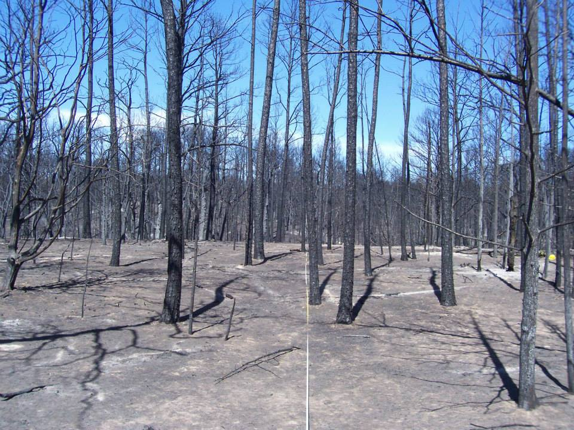
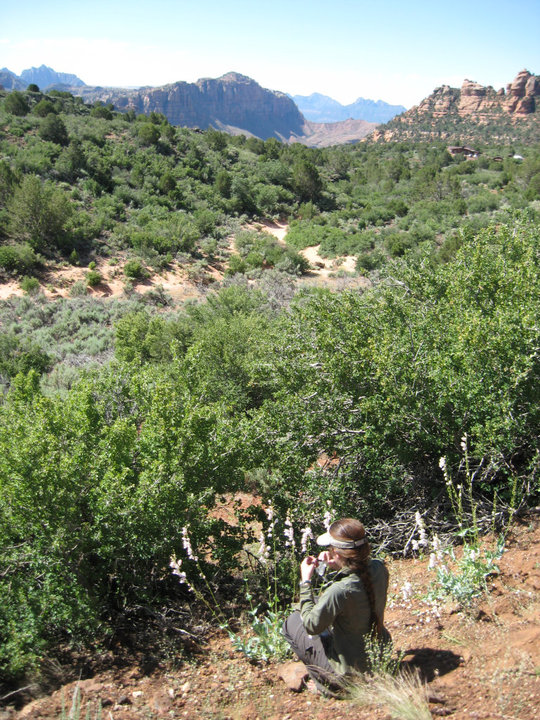

- CV
- Pubs. & Media
- Research
- Home
|
 Photo: Eric Keith |
After a disturbance (such as fire), plant communities may be pushed along a number of trajectories: back to their original pre-disturbance state, towards a specific management goal, or to a novel state, for example. My dissertation research focuses on post-wildfire vegetation trajectories in pine-oak woodlands, and more specifically how post-wildfire trajectories are affected by the pre-wildfire plant community, fire intensity, and management actions.
Bastrop State Park, TX, is an excellent study site for these questions. In 2011 much of the Park was burned in a catastrophic wildfire, and the Texas Parks and Wildlife Department a decade of pre-wildfire vegetation data from permanently established FIREMON plots. The Park is located in the Lost Pines, an isolated patch of loblolly pines at their western-most range. In addition to loblollies, the Park contains multiple species of oak, and in many places, a dense understory of yaupon.
In the two years following the wildfire, we have found that wildfire severity and certain management actions have had significant effects on immediate post-wildfire vegetation. Of greatest concern is the 'race' developing between the fast-growing, resprouting oaks and the slower-growing loblollies, which only regenerate from seeds. These early post-wildfire years may be critical in determining whether the Lost Pines becomes a pine-dominated savanna or an oak-dominated forest.
|
 Photo: Melissa L. Gray |
My work focused on potential responses of Penstemon palmeri, an herbaceous flowering plant used in ecological restorations in the southwestern US, to warming. I gathered floral and vegetation morphological data along with pollinator observations in Zion National Park, UT, with the help of Melissa Gray. I then planted seeds collected from field sites and measured seedlings in current and predicted future temperature regimes in a controlled environment to help assess the relationship between temperature, morphology and reproductive success in P. palmeri.
You can find my old website here, and the Skogen Lab page here.